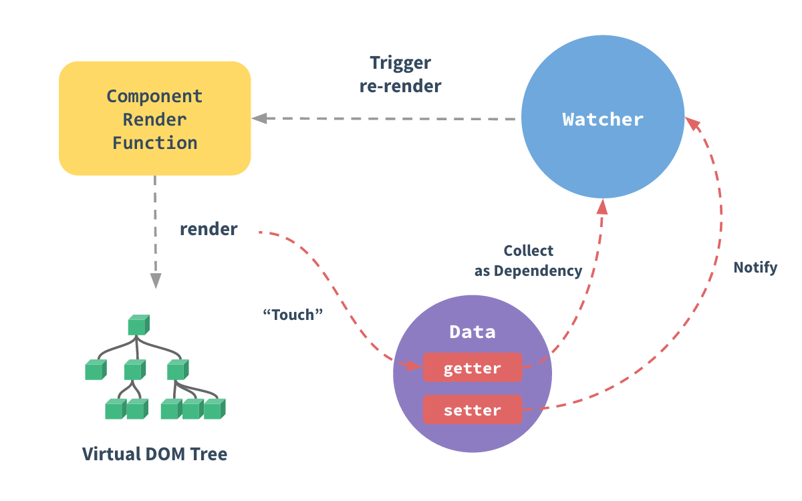
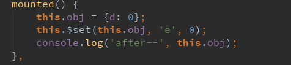
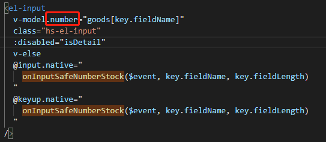
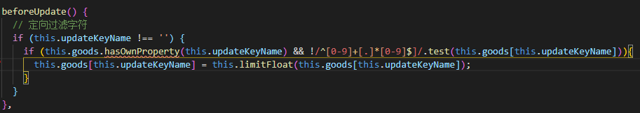
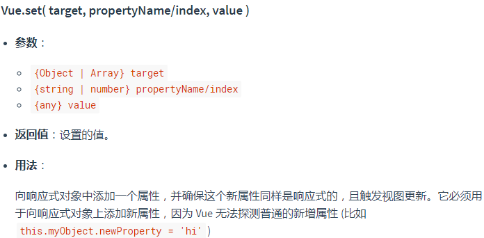
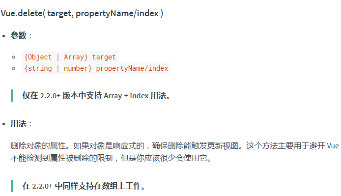

CONTENT OUTLINE
- 深入响应式原理
- Problems To Collect
– Vue异步获取数据后初始化数据不能及时更新
– Vue Watch的两个Demo
– Vue
el-input的事件中未及时触发数据动态渲染– Vue 中与
$set相对应的$delete
问题缘起
今天接手了一个Bug，大概描述一下：
存在一个列表和一个分页器，用的是Element-UI。
使用中，每次修改每页显示数据总数、换页等操作都会使用ajax异步请求新的数据。
问题：每次操作后，列表的渲染数据均是上一次操作的正确预期效果
主要代码如下：
1 | <!-- 分页器 --> |
1 | <!-- 列表渲染数据 --> |
1 | onPagerSizeChange(size) { |
其中，this._getGoodsList()为获取相应数据的异步请求，经验证后台数据均获取正确
所以，结论只有一个，就是异步获取数据之后，Vue 未更新 Virtual DOM
最后，发现需要渲染的数据没有加入到 vm.data()中，修改后问题解决。
也因此，在这里在此回顾
Vue响应式原理
深入响应式原理
Vue 最独特的特性之一，是其非侵入性的响应式系统。数据模型仅仅是普通的 JavaScript 对象。而当你修改它们时，视图会进行更新。
如何追踪变化
当你把一个普通的 JavaScript 对象传入 Vue 实例作为 data 选项，Vue 将遍历此对象所有的 property，并使用 Object.defineProperty 把这些 property 全部转为 getter/setter。Object.defineProperty 是 ES5 中一个无法 shim 的特性，这也就是 Vue 不支持 IE8 以及更低版本浏览器的原因。
这些 getter/setter 对用户来说是不可见的，但是在内部它们让 Vue 能够追踪依赖，在 property 被访问和修改时通知变更。这里需要注意的是不同浏览器在控制台打印数据对象时对 getter/setter 的格式化并不同，所以建议安装 vue-devtools 来获取对检查数据更加友好的用户界面。
每个组件实例都对应一个 watcher 实例，它会在组件渲染的过程中把“接触”过的数据 property 记录为依赖。之后当依赖项的 setter 触发时，会通知 watcher，从而使它关联的组件重新渲染。

检测变化的注意事项
由于 JavaScript 的限制，Vue 不能检测数组和对象的变化。尽管如此我们还是有一些办法来回避这些限制并保证它们的响应性。
对于对象
Vue 无法检测 property 的添加或移除。由于 Vue 会在初始化实例时对 property 执行 getter/setter 转化，所以 property 必须在 data 对象上存在才能让 Vue 将它转换为响应式的。例如：
1 | var vm = new Vue({ |
对于已经创建的实例，Vue 不允许动态添加根级别的响应式 property。但是，可以使用 Vue.set(object, propertyName, value) 方法向嵌套对象添加响应式 property。例如，对于：
1 | Vue.set(vm.someObject, 'b', 2) |
您还可以使用 vm.$set 实例方法，这也是全局 Vue.set 方法的别名：
1 | this.$set(this.someObject,'b',2) |
有时你可能需要为已有对象赋值多个新 property，比如使用 Object.assign() 或 _.extend()。但是，这样添加到对象上的新 property 不会触发更新。在这种情况下，你应该用原对象与要混合进去的对象的 property 一起创建一个新的对象。
1 | // 代替 `Object.assign(this.someObject, { a: 1, b: 2 })` |
对于数组
Vue 不能检测以下数组的变动：
- 当你利用索引直接设置一个数组项时，例如：
vm.items[indexOfItem] = newValue - 当你修改数组的长度时，例如：
vm.items.length = newLength
举个例子：
1 | var vm = new Vue({ |
为了解决第一类问题，以下两种方式都可以实现和 vm.items[indexOfItem] = newValue 相同的效果，同时也将在响应式系统内触发状态更新：
1 | // Vue.set |
你也可以使用 vm.$set 实例方法，该方法是全局方法 Vue.set 的一个别名：
1 | vm.$set(vm.items, indexOfItem, newValue) |
为了解决第二类问题，你可以使用 splice：
1 | vm.items.splice(newLength) |
声明响应式 property
由于 Vue 不允许动态添加根级响应式 property，所以你必须在初始化实例前声明所有根级响应式 property，哪怕只是一个空值：
1 | var vm = new Vue({ |
如果你未在 data 选项中声明 message，Vue 将警告你渲染函数正在试图访问不存在的 property。
这样的限制在背后是有其技术原因的，它消除了在依赖项跟踪系统中的一类边界情况，也使 Vue 实例能更好地配合类型检查系统工作。但与此同时在代码可维护性方面也有一点重要的考虑：data对象就像组件状态的结构 (schema)。提前声明所有的响应式 property，可以让组件代码在未来修改或给其他开发人员阅读时更易于理解。
异步更新队列
可能你还没有注意到，Vue 在更新 DOM 时是异步执行的。只要侦听到数据变化，Vue 将开启一个队列，并缓冲在同一事件循环中发生的所有数据变更。如果同一个 watcher 被多次触发，只会被推入到队列中一次。这种在缓冲时去除重复数据对于避免不必要的计算和 DOM 操作是非常重要的。然后，在下一个的事件循环“tick”中，Vue 刷新队列并执行实际 (已去重的) 工作。Vue 在内部对异步队列尝试使用原生的 Promise.then、MutationObserver 和 setImmediate，如果执行环境不支持，则会采用 setTimeout(fn, 0) 代替。
例如，当你设置 vm.someData = 'new value'，该组件不会立即重新渲染。当刷新队列时，组件会在下一个事件循环“tick”中更新。多数情况我们不需要关心这个过程，但是如果你想基于更新后的 DOM 状态来做点什么，这就可能会有些棘手。虽然 Vue.js 通常鼓励开发人员使用“数据驱动”的方式思考，避免直接接触 DOM，但是有时我们必须要这么做。为了在数据变化之后等待 Vue 完成更新 DOM，可以在数据变化之后立即使用 Vue.nextTick(callback)。这样回调函数将在 DOM 更新完成后被调用。例如：
1 | <div id="example">{{message}}</div> |
在组件内使用 vm.$nextTick() 实例方法特别方便，因为它不需要全局 Vue，并且回调函数中的 this 将自动绑定到当前的 Vue 实例上：
1 | Vue.component('example', { |
因为 $nextTick() 返回一个 Promise 对象，所以你可以使用新的 ES2017 async/await 语法完成相同的事情：
1 | methods: { |
Vue 给对象添加属性
在开发过程中，我们时常会遇到这样一种情况：当 vue 的 data 里边声明或者已经赋值过的对象或者数组（数组里边的值是对象）时，向对象中添加新的属性，如果更新此属性的值，是不会更新视图的。
根据官方文档定义：如果在实例创建之后添加新的属性到实例上，它不会触发视图更新。
受现代 JavaScript 的限制 (以及废弃 Object.observe)，Vue 不能检测到对象属性的添加或删除。由于 Vue 会在初始化实例时对属性执行 getter/setter 转化过程，所以属性必须在 data 对象上存在才能让 Vue 转换它，这样才能让它是响应的。
看以下实例：
1 | <template> |
可以看出d属性是有get 和 set方法的，而新增的e属性是没有的
1 | // 点击触发3次addd，点击触发3次adde,页面效果及控制台信息如下 |
1 | // 此时触发1次addd,页面效果如下： |
由此可以看出，更新新增属性e，是不会更新视图，但是会改变其值，当更新原有属性d时会更新视图，同时将新增的属性e的值也更新到视图里边
解决方案
官方定义 中的解决方法在上文中已经给出 —-> 检测变化的注意事项
有时你想向已有对象上添加一些属性，例如使用 Object.assign() 或 _.extend() 方法来添加属性。
但是，添加到对象上的新属性不会触发更新。在这种情况下可以创建一个新的对象，让它包含原对象的属性和新的属性：
1 | // 代替 `Object.assign(this.obj, { a: 1, e: 2 })` |
上述实例解决如下：在 mounted() 中动态添加全局对象属性

1 | // 点击触发3次addd，点击触发3次adde,页面效果及控制台信息如下： |
Problems To Collect
1、Vue异步获取数据后初始化数据不能及时更新
- 钩子函数尽量使用mounted来完成初始化函数，根据vue的生命周期尽量不要用mounted之前的
- 对于可能要改变的值，最好直接写到data{}中
- 如果还不能实时更新，通过vue的官方
$set方法可以实现手动设置 - 一些特殊set方法，比如其他js框架的set方法，会和vue的方法冲突造成数据不能同步
2、Vue Watch的两个Demo
参考
Demo1
1 | <template> |
Demo2
下面这个例子中，如果watch监测的是一个对象的话，直接使用watch是不行的，此时我们可以借助于computed计算属性来完成。
1 | <template> |
Demo3
数组的变化，不需要深度watch
1 | <div id="app"> |
3、Vue el-input 的事件中未及时触发数据动态渲染
BUG—-2020/11/4
问题是这样的：这个使用的
element-ui输入框，要求其输入必须为浮点数字（数字和点），而非除数字以外的字符。Bug出现在其可以用中文输入法输入字符并停留，未及时触发相应的
@input事件和@keyup事件

处理过程中，尝试了所有可能的方法，比如
①使用 this.$set() 方法，参考此处
②使用 vm.$forceUpdate()**，官方文档用处不大，顾名思义主要目的就是强制更新渲染DOM**，然并卵……
③最后实在不行，想着在 update 之前就把多余字符串过滤了。于是添加 beforeUpdate() 方法，进行补充过滤

（……是时候看看
Vue源码了~）BUG—-2020/11/5
问题同样应该还是数据不及时更新的问题，这次的解决方案仅仅是：
①为一个组件的事件 @select 添加 .native ，解决了数据未同步的问题
统一解决：
已在 Vue打脸问题中解决 => Vue中的事件 中解决
4、Vue 中与 $set 相对应的 $delete
vue给对象新增属性，对于一般的对象新增属性,只需要对象新增属性赋值操作就可以啦,但是不会触发视图更新
1 | <template> |
而在我们点击“查看信息”按钮时，看到页面并没有显示，而打印this.infos 就有message字段，所以
实例创建后添加属性，并不会触发视图更新
这时候需要使用 vue中 $set 方法,既可以新增属性，又可更新视图
1 | this.$set(this.infos, "message", "出生于四川遂宁") |
或者如果是全局就使用这种
1 | var vm = new Vue({..}) |

vue删除对象中某个属性同理，使用delete
1 | delete this.data.key |
或者
1 | var vm = new Vue({..}) |
